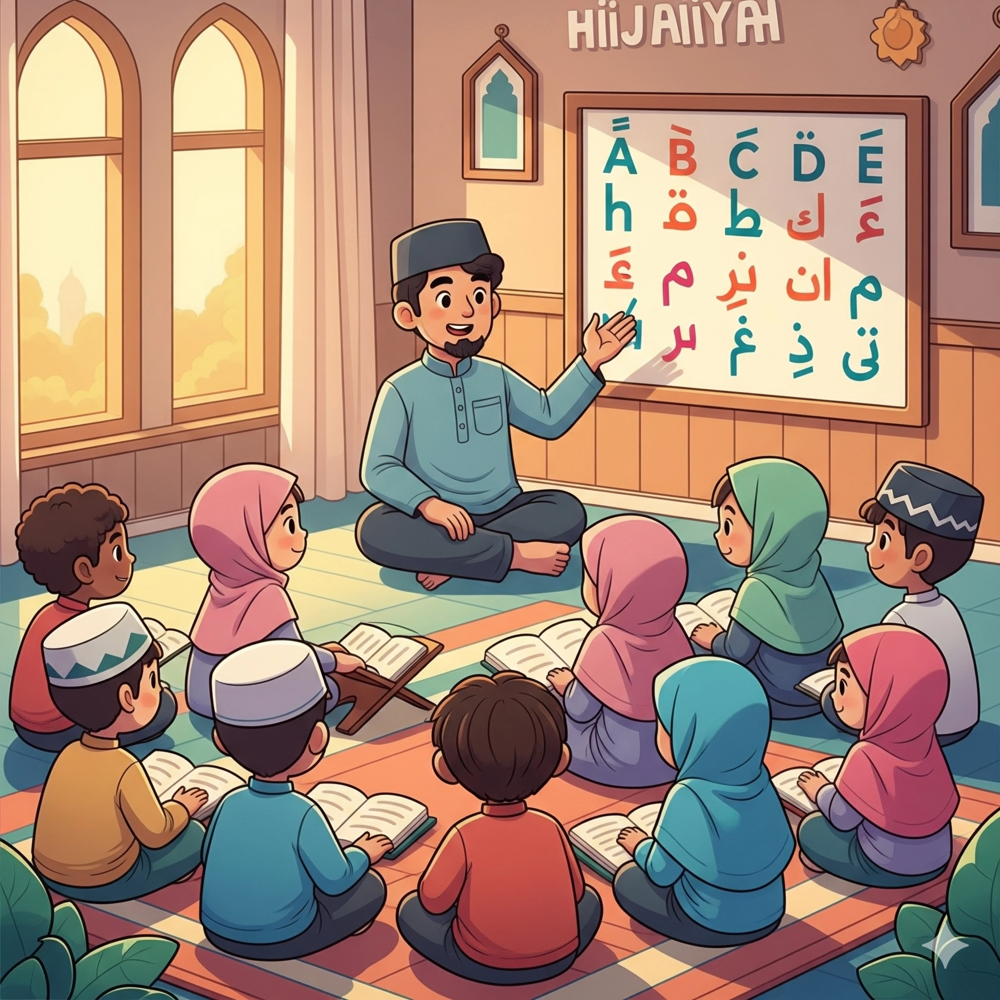

Konsep Huruf Hijaiyah
Huruf hijaiyah adalah huruf-huruf abjad Arab yang digunakan dalam Al-Quran dan bahasa Arab. Jumlah huruf hijaiyah ada 29.

Contoh Huruf Hijaiyah
- ا: (Alif)
- ب: (Ba)
- ت: (Ta)
- ث: (Tsa)
- ج: (Jim)
- ح: (Ha)
- خ: (Kha)
- د: (Dal)
- ذ: (Dzal)
- ر: (Ra)
- ز: (Zai)
- س: (Sin)
- ش: (Shin)
- ص: (Sad)
- ض: (Dhad)
- ط: (Tha)
- ظ: (Zha)
- ع: (Ain)
- غ: (Ghin)
- ف: (Fa)
- ق: (Qaf)
- ك: (Kaf)
- ل: (Lam)
- م: (Mim)
- ن: (Nun)
- ه: (Ha)
- و: (Wau)
- ء: (Hamzah)
- ي: (Ya)
Tanda Baca (Harakat)
Tanda baca dalam huruf Hijaiyah (bahasa Arab) disebut juga dengan harakat. Berikut adalah tanda baca (harakat) dasar dalam huruf hijaiyah:
- Fathah ( َ ): Bunyi "a"
- Kasrah ( ِ ): Bunyi "i"
- Dhammah ( ُ ): Bunyi "u"
- Sukun ( ْ ): Menandakan huruf mati.
- Tasydid ( ّ ): Menggandakan huruf.
- Tanwin ( ً , ٍ , ٌ ): Menunjukkan bunyi "n" di akhir.

Makharijul Huruf (cara melafalkan huruf hijaiyah)